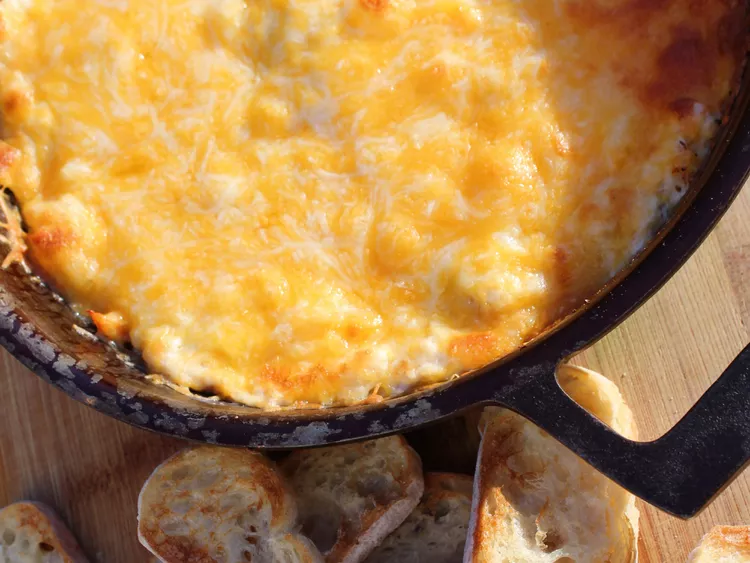

Seafood Skillet Dip

Combination of seafood and cheesy dip
This addictive dip has fresh shrimp, lump crab and salmon. Baked in a skillet with seasoning along with cream cheese and Colby-Jack. Enjoy with chips, crackers or lightly toased bread.
Ingredients
- 1 tablespoon olive oil
- 1/4 cup onion
- 6 ounces shrimp, peeled and deveined
- 1 teaspoon seafood seasoning such as Old Bay
- 8 ounces cream cheese, softened
- 2 tablespoons prepared horseradish
- 1 (4 ounce) can pink salmon, drained
- 3 cups shredded Colby-Jack cheese
Steps
- Preheat the oven to 350 degrees F. Heat a 10 inch cast iron skillet over medium heat.
- Add olive oil, onion, shrimp and 1/2 teaspoon Old Bay seasoning to the skillet. Cook and stir until shrimp begin to turn pink, about 2 minutes per side. Remove skillet from heat. Once shrimp is cool enough to handle, chop and set aside.
- Beat cream cheese in a bowl until smooth. Stir in hoeseradish, remaining 1/2 teaspoon Old Bay seasoning, 1 cup Colby-Jack cheese, chopped shrimp, cooked onions, salmon and crabmeat until will combined.
- Transfer mixture back into skillet and spread evenly. Top with remaining 2 cups shredded cheese.
- Bake in the preheated oven until edges are bubbling and cheese is melted and turning golden brown, about 15 minutes. Remove from the oven and let cool for 5 minutes. Serve warm, with slices of sourdough bread, crackers or tortilla chips